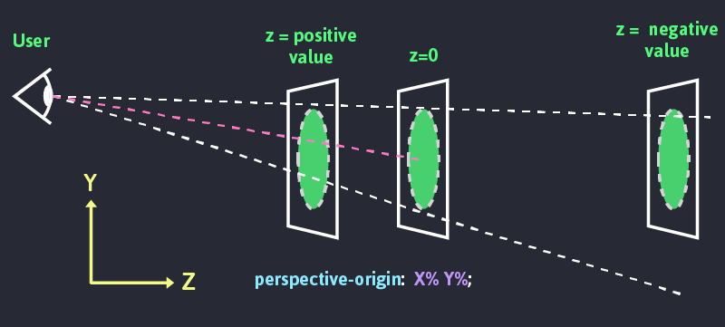
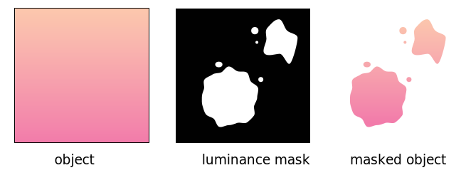

Variable Fonts
Een font dat bepaalde eigenschappen dynamisch kan aanpassen.
Download een variable font zoals Roboto Flex
Meer info over de eigenschappen (axis)
@font-face {
/* RobotoFlex-VariableFont options:
slnt,wdth,wght,opsz,
GRAD,XTRA,YOPQ,YTAS,
YTDE,YTFI,YTLC,YTUC */
font-family: 'RobotoFlex';
src: url(RobotoFlex.ttf) format('truetype');
}
h1 {
font-family: 'RobotoFlex';
font-size: 3rem;
font-variation-settings:
"wght" 1000,
"wdth" 50;
}
Hover me !!!!
Je kan die nu dynamisch aanpassen. bv bij een hover
h1:hover {
font-variation-settings:
"wght" 300,
"wdth" 100;
//voeg ook een transition toe bij de h1 voor een smooth animatie
}
Hard drop shadow
Het TikTok shadow effect is een dubbele harde schaduw
h1 {
// text-shadow: x y blur color, ... ;
text-shadow:
.06em .06em 0px #ED1F82,
-.06em -.06em 0px #1FEDE0;
}
Scroll Snap
Een scroll snap zorgt ervoor dat de content 'magnetisch' snapt naar een van de zijdes van je browser venster. Op die manier kan je er steeds voor zorgen dat de inhoud mooi in beeld staat (zoals deze presentatie).
main {
height: 100vh;
overflow-x: hidden;
overflow-y: auto;
scroll-snap-type: y mandatory;
section {
width: 100vw;
height: 100vh;
scroll-snap-align: start;
}
}
ScrollIntoView navigation
In een One-Page website kan je ook een navigatie maken. Hierbij leg je een link naar de anchors (id binnen html) via het hash teken.
<a href="#about">About us</a>
...
<section id="about">...</section>
Bij het klikken ga je dan meteen naar de juiste sectie. Dit kan je ook met een smooth scroll doen.
main {
scroll-behavior: smooth;
}
Parallax effect
Het parallax effect is een effect waarbij de achtergrond een andere snelheid heeft dan de voorgrond. Hierdoor lijkt het alsof de achtergrond verder weg is.
Parallax effect via CSS
In CSS kunnen we dit bereiken door gebruik te maken van de translateZ functie. Dit in combinatie met transform-style: preserve-3d; zorgt ervoor dat de achtergrond een andere snelheid heeft dan de voorgrond. Het dieptezicht kan je aanpassen via de eigenschap perspective: 2px;
Parallax effect via SCSS
main {
perspective: 2px;
section {
transform-style: preserve-3d;
&::after {
content: " ";
position: absolute;
top: 0;
right: 0;
bottom: 0;
left: 0;
transform: translateZ(-1px) scale(1.5);
background-size: 100%;
z-index: -1;
background: url(../images/dark.jpeg) no-repeat center center;
background-size: cover;
}
&.no-parallax {
background-color: var(--background);
z-index: 999;
}
}
}
SVG mask in CSS
Een SVG mask is een SVG die je kan gebruiken om een andere afbeeldingen te maskeren. Je kan dit gebruiken om een afbeelding te laten vervagen of om een afbeelding te laten veranderen in een bepaalde vorm.
SVG mask in CSS
Dit kan via de mask-image en bijhorende css eigenschappen. Echter reageert niet elke browser op de standaard css en moet je dus ook de -webkit variant toevoegen.
Wil je weten welke eigenschap reeds standaard is geimplementeerd en welke een eventuele -webkit prefix moeten hebben dan kan je caniuse.com gebruiken.
img {
mask-image: url(../images/mask.svg);
mask-type: alpha;
mask-repeat: repeat-y;
mask-size: 300% 100%;
mask-position: left;
-webkit-mask-image: url(../images/mask.svg);
-webkit-mask-type: alpha;
-webkit-mask-repeat: repeat-y;
-webkit-mask-size: 300% 100%;
-webkit-mask-position: left;
}